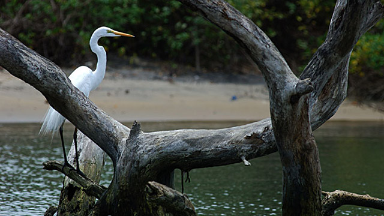

Kozhikode
(Est. - 1 Jan 1957)
Bound by Kannur, Wayanad and Malappuram in the North, East and West respectively, Kozhikode or former Calicut has been the seat of dramatic history, political conspiracy and flourishing trade. The headquarters of the district is the town of Kozhikode which is a major tourist attraction and an active port.
These are two unique destinations to visit in Kozhikode.

Kozhikode Beach
